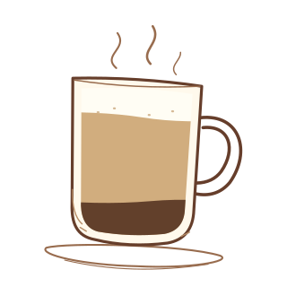

Latte
More milk, a little foam
Mostly steamed milk, with espresso underneath and a thin layer of foam.
Espresso · Steamed milk · A little foam
Origin and preparation
Coffee with milk has a long history in Europe. The Italian name caffè latte means “milk coffee.” Pour steamed milk into espresso, then finish with a thin layer of foam.